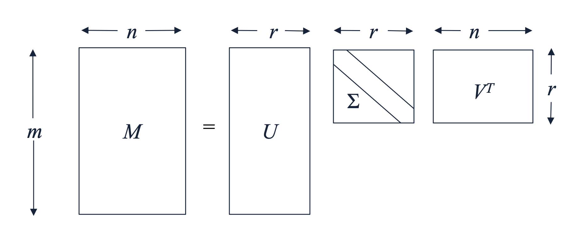
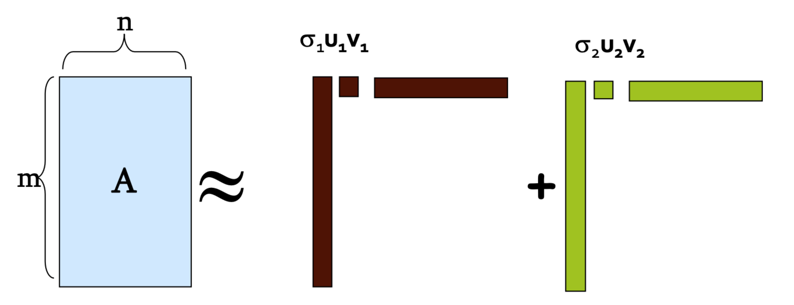
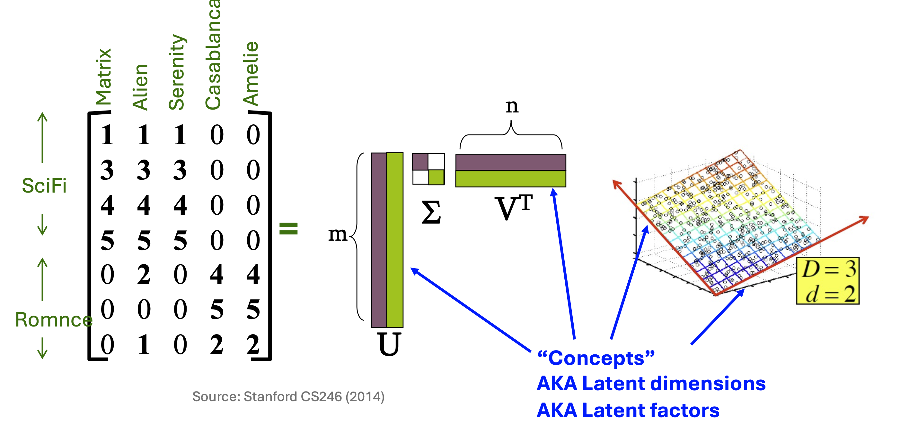
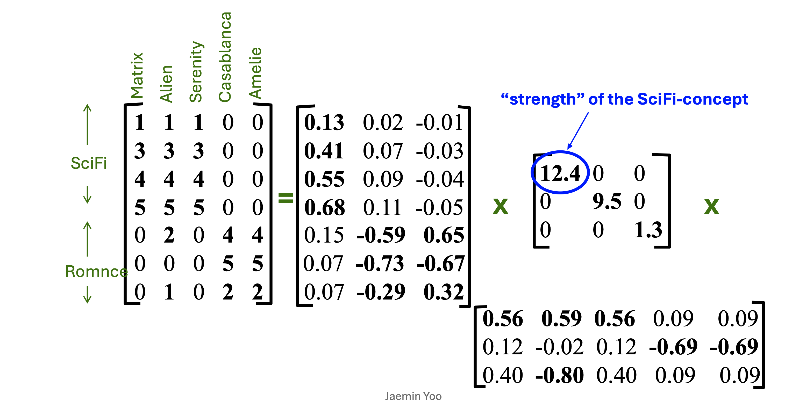
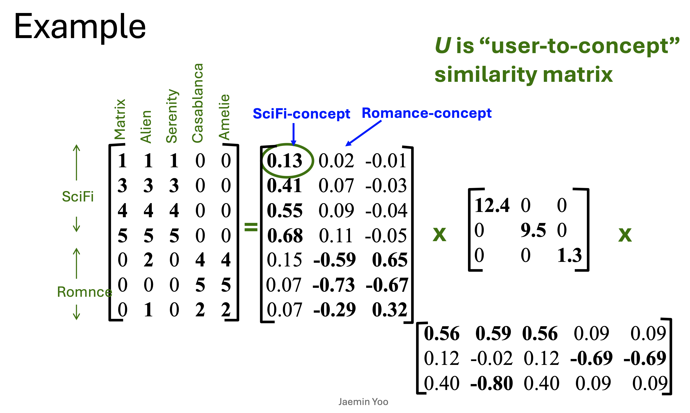
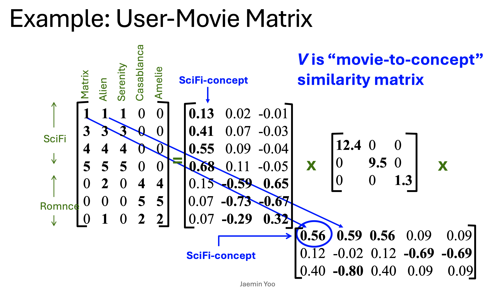
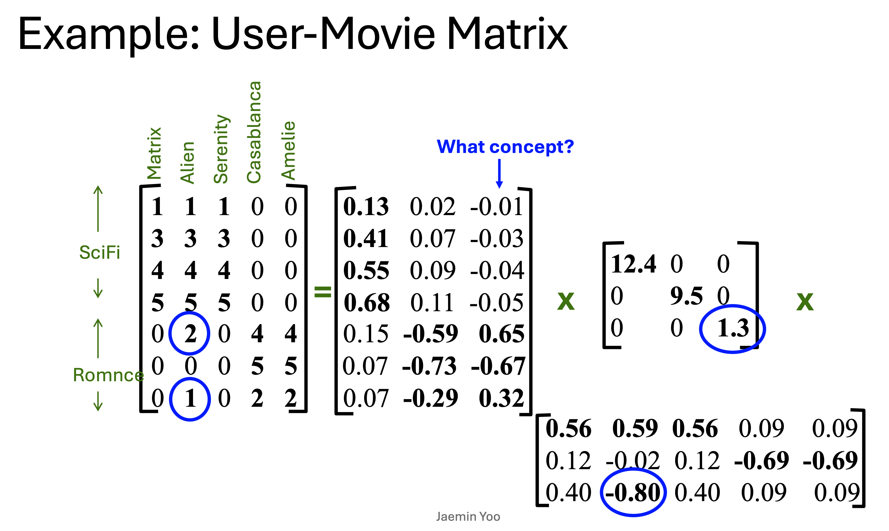

1. 들어가며 (Introduction)
데이터 마이닝과 머신러닝에서 고차원 데이터를 다루는 것은 “차원의 저주(Curse of Dimensionality)”를 피하고 연산 효율성을 높이기 위해 필수적입니다. 이번 포스트에서는 차원 축소의 가장 강력하고 널리 쓰이는 선형대수학적 도구인 특이값 분해(Singular Value Decomposition, SVD)에 대해 깊이 있게 다루어 보겠습니다.
특히 SVD가 단순한 수학적 테크닉을 넘어 추천 시스템 등의 실제 응용에서 어떤 직관적인 의미(Latent Factor)를 가지는지, 그리고 첨부된 시각 자료들을 통해 각 행렬과 수식의 성분들이 구체적으로 무엇을 지시하는지 상세히 살펴보겠습니다.
2. 특이값 분해(SVD)의 수학적 기초
2.1. SVD의 정의와 차원
임의의 실수 행렬 \(M\in\mathbb{R}^{m\times n}\)이 주어졌을 때, SVD는 이 행렬을 세 개의 행렬의 곱으로 분해(Factorization)하는 방법입니다. 수식으로는 다음과 같이 표현됩니다:
\[M\approx U\Sigma V^{\top}\]
여기서 우리가 확보하고자 하는 잠재 요인(Latent Factor)의 개수를 \(r\)이라고 할 때, 각 행렬의 차원은 다음과 같이 결정됩니다.

- \(M\): \(m\times n\) 크기의 원본 데이터 행렬
- \(U\): \(m\times r\) 크기의 좌측 특이 벡터(Left Singular Vectors) 행렬
- \(\Sigma\): \(r\times r\) 크기의 특이값(Singular Values) 대각 행렬
- \(V^{\top}\): \(r\times n\) 크기의 우측 특이 벡터(Right Singular Vectors) 행렬의 전치
2.2. 복원 오차 (Reconstruction Error)와 Frobenius Norm
우리는 원본 행렬 \(M\)을 더 작은 랭크 \(r\)을 가진 행렬들의 곱으로 “근사(approximate)”합니다. 이때 원본과 근사 행렬 간의 오차를 복원 오차(Reconstruction Error)라고 하며, 수학적으로는 Frobenius 노름(norm)을 사용하여 정의합니다:
\[Error=||M-U\Sigma V^{\top}||_{F}\]
행렬 \(A\)의 Frobenius 노름은 행렬 내 모든 원소의 제곱합에 루트를 씌운 값으로 정의됩니다 (\(||A||_{F}=\sqrt{\sum_{i,k}a_{ik}^{2}}\)). 만약 잠재 요인의 수 \(r\)이 원본 행렬의 랭크 이상이 된다면 (\(r\ge\text{rank}(M)\)), 복원 오차는 0이 되어 완벽한 복원이 가능해집니다.
2.3. 분해 행렬들의 주요 성질
SVD를 구성하는 세 행렬 \(U\), \(\Sigma\), \(V\)는 매우 특별하고 유용한 성질을 가집니다:
- 직교성 (Orthonormality): \(U\)와 \(V\)의 열벡터들은 서로 직교하며 그 크기가 1인 정규 직교 기저를 이룹니다 (\(U^{\top}U=I,\quad V^{\top}V=I\)).
- 특이값의 비음성과 정렬: \(\Sigma\)는 대각 행렬이며, 대각 원소 \(\sigma_i\)를 특이값이라 부릅니다. 이들은 항상 0 이상이며, 가장 중요한 정보부터 내림차순으로 정렬됩니다 (\(\sigma_{1}\ge\sigma_{2}\ge\dots\ge0\)).
- 보편성: 정방행렬에만 국한된 고유값 분해와 달리, SVD는 어떤 형태의 실수 행렬에 대해서도 항상 적용 가능합니다.
3. SVD의 다른 관점: Rank-1 행렬들의 합
SVD를 전체 행렬 곱셈이 아니라, 벡터 단위의 외적(Outer product) 합으로 바라보면 기하학적 의미가 훨씬 명확해집니다.
\[M\approx U\Sigma V^{\top}=\sum_{i=1}^{r}\sigma_{i}u_{i}v_{i}^{\top}\]
이 수식은 원본 데이터가 \(r\)개의 독립적인 Rank-1 행렬(\(u_i v_i^\top\))들의 선형 결합으로 구성됨을 의미합니다.

각 항 \(\sigma_i u_i v_i^\top\)는 \(i\)번째 중간 개념(Intermediate concept)이 원본 데이터에 미치는 영향을 나타냅니다. 특이값 \(\sigma_i\)는 내림차순 정렬되므로, 우리는 상위 몇 개의 항만을 취함으로써 데이터를 효과적으로 압축(차원 축소)하고 노이즈를 걸러낼 수 있습니다.
4. 직관적 이해: 추천 시스템 (User-Movie Matrix)
SVD가 실생활 데이터에서 어떤 물리적/직관적 의미를 갖는지 파악하기 위해, 행을 “사용자(User)”로, 열을 “영화(Movie)”로 가지는 평점 행렬에 적용해 보겠습니다.
4.1. 잠재 요인(Latent Factor)의 추출
원본 행렬에 SVD를 적용하면, 눈에 보이지 않던 “잠재 요인(Latent Factor)” 혹은 “개념(Concept)” 축이 공간상에 새롭게 도출됩니다.

4.2. 행렬 성분의 직관적 의미
분해된 각 행렬을 수치적으로 뜯어보면, 각 성분이 매우 구체적이고 해석 가능한 역할을 수행함을 알 수 있습니다.
1) 행렬 \(\Sigma\): 개념의 강도 (Strength of Concept)
\(\Sigma\)의 대각 원소는 도출된 각 잠재 개념이 전체 데이터 내에서 얼마나 지배적이고 강한 영향력을 가지는지를 나타냅니다.

2) 행렬 \(U\): 사용자-개념 유사도 (User-to-concept Similarity)
\(U\) 행렬은 특정 사용자가 각 잠재 개념과 얼마나 강력한 유사도(선호도)를 가지는지를 수치화합니다.

3) 행렬 \(V\): 영화-개념 유사도 (Movie-to-concept Similarity)
마지막으로 \(V\) 행렬(수식상 \(V^{\top}\))은 각 열(영화)이 도출된 잠재 개념 축 위에서 어떤 좌표를 가지는지, 즉 영화의 성향을 나타냅니다.

4) 종합 예시: 원본 평점의 재구성
위 세 가지 성질을 종합하면 원본 매트릭스의 특정 평점이 어떻게 수학적으로 예측 및 재구성되는지 명확히 추적할 수 있습니다.

5. SVD의 계산 알고리즘 및 유도 (Derivation)
그렇다면 어떻게 \(M\)으로부터 직교행렬 \(U, V\)와 대각행렬 \(\Sigma\)를 계산할 수 있을까요? SVD의 해는 대칭행렬의 고유값 분해(Eigendecomposition) 문제로 환원시켜 구할 수 있습니다.
[Step 1] 원본 행렬과 그 전치 행렬의 곱 유도 먼저 행렬 분해 가정 \(M=U\Sigma V^{\top}\)에서 양변을 전치(Transpose)합니다: \[M^{\top}=(U\Sigma V^{\top})^{\top}=(V^{\top})^{\top}\Sigma^{\top}U^{\top}=V\Sigma^{\top}U^{\top}\]
이제 \(M^{\top}\)에 \(M\)을 곱하여 정방형의 대칭행렬 \(M^{\top}M\)을 만듭니다: \[M^{\top}M=(V\Sigma^{\top}U^{\top})(U\Sigma V^{\top})\]
행렬 결합 법칙을 적용하고, 직교행렬의 성질(\(U^{\top}U=I\))과 대각행렬의 성질(\(\Sigma^{\top}=\Sigma\))을 이용하면 식이 단순해집니다. \[M^{\top}M=V\Sigma^{\top}(U^{\top}U)\Sigma V^{\top}=V\Sigma\Sigma V^{\top}=V\Sigma^{2}V^{\top}\]
[Step 2] 고유값 분해와의 연결 도출된 \(M^{\top}M=V\Sigma^{2}V^{\top}\)의 양변 우측에 다시 직교행렬 \(V\)를 곱해봅니다: \[M^{\top}MV=V\Sigma^{2}V^{\top}V = V\Sigma^{2}\]
이 식을 \(V\)의 \(i\)번째 열벡터인 \(v_i\)에 대해 전개하면 아래와 같은 표준 고유값 문제를 얻습니다: \[M^{\top}Mv_{i}=\sigma_{i}^{2}v_{i}\]
즉, SVD의 해답은 다음과 같이 계산됩니다: * 우측 특이 벡터 행렬 \(V\): 대칭행렬 \(M^{\top}M\)의 고유벡터(Eigenvectors)들입니다. * 대각 행렬 \(\Sigma\): \(M^{\top}M\)의 고유값들에 제곱근을 취한 값(\(\sigma_i^2 = \Sigma_{ii}^2\))입니다. * 좌측 특이 벡터 행렬 \(U\): 동일한 논리로 \(MM^{\top}\)의 고유벡터를 구함으로써 도출합니다.
6. PCA와 SVD의 얕고도 깊은 관계
데이터 마이닝에서 가장 잘 알려진 차원 축소 기법인 주성분 분석(PCA)과 SVD는 본질적으로 수학적 동치에 가까운 깊은 관계를 맺고 있습니다.
- 결과적 동치성: 앞선 유도 과정에서 보았듯 SVD의 \(V\)는 \(M^{\top}M\)(데이터의 형태에 비례하는 공분산 행렬)의 고유벡터 행렬입니다. 즉, PCA에서 도출하고자 하는 “주성분(Principal components)” 벡터들이 곧 SVD의 우측 특이 벡터 행렬 \(V\)와 완전히 동일합니다.
- 데이터 전처리의 제약: PCA를 수학적 정의에 맞게 적용하려면 반드시 데이터의 각 피처별 평균을 0으로 맞추는 중심화(Column-centering)가 선행되어야 공분산 행렬이 성립합니다. 하지만 SVD 연산 자체는 행렬 평균 중심화 여부와 상관없이 항상 가능합니다.
- 현실적 연산량의 한계 극복: 실제 수십억 개의 행을 가진 거대한 빅데이터에서 \(M^{\top}M\) 형태의 거대한 공분산 행렬을 직접 구축하고 고유값 분해(Eigendecomposition)를 수행하는 것은 치명적으로 느리고 메모리를 파괴합니다.
- 표준적인 해결책: 이 때문에 현대의 머신러닝 라이브러리들은 PCA 알고리즘 내부적으로 공분산 행렬을 직접 연산하지 않고, 고효율 최적화된 알고리즘으로 SVD를 곧바로 풀어 \(V\)를 획득하는 우회 방식을 산업 표준으로 채택하고 있습니다.
7. 요약 (Summary)
- SVD의 의의: SVD는 행렬을 직교행렬 \(U, V\)와 대각행렬 \(\Sigma\)로 쪼개어 데이터에 내재된 은닉 구조(잠재 개념)를 발견하고 압축하는 선형대수의 핵심 도구입니다.
- 해석의 직관성: 사용자-영화 추천 시스템에서 확인했듯, \(U\) 행렬은 사용자 취향을, \(V\) 행렬은 아이템 특성을, \(\Sigma\)는 그 개념의 영향력을 의미하여 매우 뛰어난 해석력을 부여합니다.
- PCA와의 연결: \(M^\top M\) 공분산 행렬의 고유벡터 문제로 치환 가능하여 PCA와 본질적으로 동일한 목적을 지니며, 실제 컴퓨팅 환경에서 고효율 차원 축소 파이프라인의 코어 역할을 담당합니다.